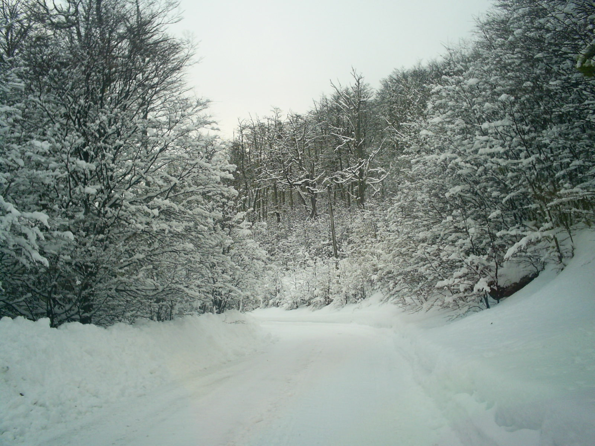

En invierno, Coyhaique cambia de ritmo. Los cerros se cubren de blanco, el humo de las chimeneas sube despacio y, a 30 minutos de la ciudad, un camino entre lengas nevadas lleva hasta las pistas. El centro de ski El Fraile es un centro de montaña pequeño y cercano a la ciudad, con la Patagonia como telón de fondo.
En esta guía te contamos dónde está, cómo llegar, qué pistas y andariveles tiene, cuándo abre, qué ofrece en verano y qué datos conviene confirmar antes de subir, porque varios cambian de una temporada a otra.
Dónde está el centro de ski El Fraile y cómo llegar
El Fraile está a 30 minutos de Coyhaique, subiendo el cerro El Fraile por el camino a Lago Pollux. El centro está a unos 1.599 m sobre el nivel del mar. En invierno se usa para actividades en la nieve, y en verano, para trekking y descenso en bicicleta.
En pleno invierno, el tramo de ripio puede estar cubierto de nieve. Sube con un vehículo adecuado, maneja con calma y consulta el estado del camino antes de salir.

Si vienes de fuera de la región, lo habitual es volar al Aeropuerto Balmaceda y seguir por tierra hasta Coyhaique. Te lo explicamos en cómo llegar a Coyhaique.
Pistas y andariveles
El Fraile funciona con 2 andariveles de arrastre: uno de plato y uno de ancla. No esperes telesillas ni grandes instalaciones; es un centro de esquí a escala local.
- Pendientes: de 8° a 35°, lo que da espacio tanto para quienes están aprendiendo como para quienes buscan algo más exigente.
- Largo de las pistas: de 600 a 3.200 m.
- Número de pistas: varía según la fuente. Chileanski menciona "5 canchas" y Skiresort.info habla de "5 km de pistas". Tómalo como referencia.
Skiresort.info muestra el centro como "cerrado temporalmente", sin indicar desde cuándo. Antes de planificar tu viaje, confirma que El Fraile esté operando esa temporada.

Temporada y horarios
La temporada va en general de junio a septiembre, siempre que haya nieve. En un lanzamiento de temporada, recogido por Radio Revelación en una nota sin fecha visible, se habló de extenderla hasta los primeros días de octubre. Un vendedor de paquetes turísticos indicaba el inicio de la temporada 2026 el 5 de julio.
Según ese mismo lanzamiento, el centro abre de martes a domingo: la subida es entre las 8:00 y las 13:00, y la bajada entre las 14:00 y las 20:00. Otras fuentes indican un horario de 8:30 a 17:30. Como los horarios pueden cambiar con la nieve y el clima, revísalos antes de salir.
Más nieve: raquetas y el invierno en Coyhaique
El esquí no es la única forma de disfrutar la nieve en Aysén. Un operador ofrece en 2026 caminatas con raquetas de nieve, con un mínimo de 2 personas. Es una buena alternativa si no esquías o si quieres caminar por el bosque nevado a tu propio ritmo.
El invierno en Coyhaique es frío, con heladas frecuentes y nieve. En agosto de 2026 hubo una ola de frío y nevadas, y el municipio instaló una aldea de emergencia. Si viajas en esos meses, lleva ropa térmica, revisa el pronóstico y considera que los caminos rurales pueden estar complicados. Fuera de temporada, El Fraile se aprovecha para trekking y descenso en bicicleta, y el territorio se abre a otros planes, como recorrer la Carretera Austral o visitar las Catedrales de Mármol.
Preguntas frecuentes
¿A cuánto está El Fraile de Coyhaique?
A 30 minutos de Coyhaique, por el camino a Lago Pollux.
¿Cuándo abre el centro de ski El Fraile?
En general de junio a septiembre, según la nieve, de martes a domingo. Confirma la fecha de apertura de cada temporada antes de viajar.
¿Se puede visitar El Fraile en verano?
Sí. En invierno el centro se usa para actividades en la nieve, y en verano, para trekking y descenso en bicicleta.
¿Sirve para principiantes?
Las pendientes van de 8° a 35°, así que hay sectores suaves y otros más exigentes. Los andariveles son de arrastre, algo a considerar si es tu primera vez.
Un refugio para todas las estaciones
Tener un lugar propio en Aysén significa vivir la región en todas sus estaciones: la nieve en invierno y los ríos en verano. En Inmobiliaria El Roble tenemos dos proyectos en Aysén, con asesoría legal durante todo el proceso de compra y opción de crédito directo sin interés: Horizontes de Mañihuales, 4 parcelas de 0,53 a 1 ha frente al río Mañihuales, con acceso por camino público, a 1 hora y 10 minutos al norte de Coyhaique y a 10 minutos de Villa Mañihuales, en venta en verde mientras se obtiene la aprobación del SAG; y Parcelas Don Guillermo, frente al río Emperador Guillermo, en plena Carretera Austral, donde queda una única parcela disponible: la B11, de 9.500 m². Conoce nuestros proyectos o escríbenos.